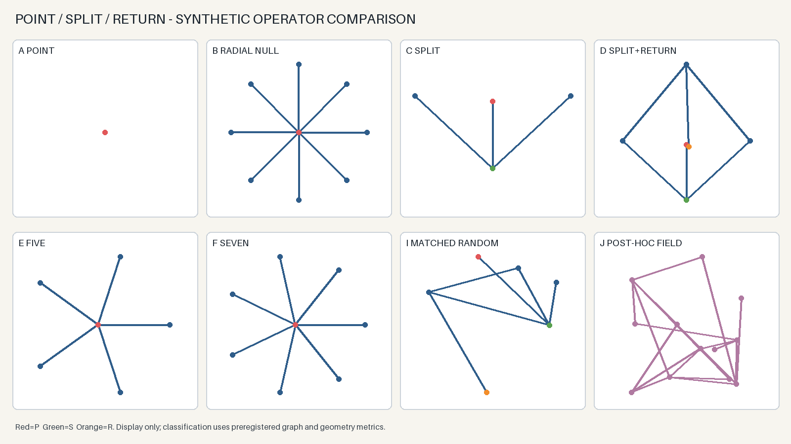

Science View
Träger vor Adresse
P ∈ X
κ : X → K
κ(P) = coordinate record
κ : X → K
κ(P) = coordinate record
X ist der Träger, P ein Punkt und κ die gewählte Koordinatisierung. Erst das Tripel macht die Zahl oder das Zahlenpaar interpretierbar.
Ein Punkt ist nicht schon eine Zahl. Eine Linie ist nicht schon ein Weg. Erst ein deklarierter Träger und eine Leseregel machen aus einer Lage eine Koordinate und aus zwei Lagen einen prüfbaren Record.
Der Punkt bezeichnet eine Lage im gewählten Raum. Die Koordinate ist ein Record dieser Lage relativ zu einem Koordinatensystem. Ein anderer Ursprung oder eine andere Basis kann den Record verändern, ohne dass der bezeichnete geometrische Punkt verschwindet.
X ist der Träger, P ein Punkt und κ die gewählte Koordinatisierung. Erst das Tripel macht die Zahl oder das Zahlenpaar interpretierbar.
Eine Adresse hilft, einen Ort wiederzufinden. Sie ist aber nicht der Ort selbst. Ändert sich das Adresssystem, kann derselbe Ort eine andere Bezeichnung erhalten.
Darum fragt NEXAH zuerst: Was trägt die Relation — und wer hat die Adresse gewählt?
Die Tafel ist hier nicht Dekoration, sondern der sichtbare Primärrecord eines ausgeführten synthetischen Tests.

Die Acht entsteht nicht allein aus der Anzahl der Punkte. Sie entsteht aus drei benannten Ja/Nein-Unterscheidungen am gerichteten Punktpaar.
Das Originalinstrument bleibt sichtbar, aber die Typen werden nicht vermischt: A2 besitzt sechs Mutationszustände; Q3 besitzt acht Binärzustände; E8 zerfällt unter dem registrierten Coxeter-Element in acht Bahnen zu je dreißig Wurzeln.
Das eingebettete HTML ist die Primärquelle dieses Abschnitts. Weitere E8-, H3-, Q3- und Navigator-Flächen werden hier nicht einzeln verlinkt.
Drei unabhängige binäre Koordinaten erzeugen den endlichen Träger 𝔽₂³.
Ausgangs- und Zielzustand bilden ein geordnetes Paar. Das Raster ist eine Relation oder Übergangstabelle.
Der registrierte Coxeter-Operator partitioniert den E8-Wurzelträger in acht disjunkte 30er-Bahnen.
Dieselben Ausgangswerte erzeugen verschiedene Räume, je nachdem welcher Operator deklariert wird. Aus dem Paar 2,3 lässt sich so ein lückenloses Fenster von fünf bis elf adressieren.
p₁+p₂p₁p₂p₁²+p₂p₁p₂p₂²p₁²+p₁p₂p₁+p₂+p₁p₂Exact, but selected: Das Fenster ist lückenlos und jede Gleichung ist exakt. Die Auswahl der Operatorwörter ist jedoch konstruiert; daraus folgt noch keine Eindeutigkeit, Vollständigkeit oder universelle Erzeugungsregel.
Die disjunkte Zusammenführung zählt zwei Typen der ersten und drei Typen der zweiten Familie: fünf Einzeltypen.
Das kartesische Produkt zählt jede Paarung eines binären Zustands mit einer von drei Klassen: sechs typisierte Paarzellen.
Drei unabhängig adressierte Stellen mit je zwei Werten erzeugen acht Belegungen beziehungsweise Funktionen von einer Dreiermenge in eine Zweiermenge.
Werden die fünf Einzeltypen und sechs Paarungstypen als zwei disjunkte Recordklassen gemeinsam geführt, umfasst das Ledger elf Einträge: p₁+p₂+p₁p₂. Derselbe Wert 11 ist zugleich die fünfte Primzahl — eine zweite, getrennt zu führende Adresse.
11 folgt nicht aus p₁+p₂ allein, sondern aus der ausdrücklich gebildeten Vereinigung von Einzel- und Paarrecords. Für p₁=2 und p₂=3 gilt p₁+p₂+p₁p₂=(p₁+1)(p₂+1)-1=11. LIFE liefert hierfür einen konkreten Cross-check: zwei Zellzustände und drei aktive Ereignisklassen — Geburt 01, Überleben 11, Tod 10 — neben 00 als inaktivem Hintergrund. Q⁻/Q⁺ und BP(Q) können danach Spiegelung beziehungsweise Bindung des Records tragen; sie sind keine zusätzlichen Zählfaktoren.111=p₂·p₁₂; drei Einsen ergeben keine Primzahl.1111=p₅·p₂₆. Die Wiederholung erhält nicht automatisch Primheit.Rₙ=(10ⁿ−1)/9 erfüllt Rₙ₊₁=10Rₙ+1 und wächst ungefähr wie 10ⁿ/9. Seine Teilbarkeit folgt der Stellenzahl: Aus d|n folgt Rd|Rₙ. Deshalb ist bei zusammengesetztem n auch Rₙ zusammengesetzt; ein primer Exponent ist notwendig, aber nicht hinreichend für eine Repunit-Primzahl. Die spätere Station p₁₀=29 gehört zur Primindexleiter — nicht zur Folge 11,111,1111,….Die Neun ist der quadratische Abschluss des zweiten Primrecords. Sie ist weder ein neuer Primwert noch ein Produkt zweier verschiedener Typen.
In Primindexnotation: 10=p₁p₃=p₂+p₄=p₁²+p₁p₂. Auch V+V=10 ist exakt, sobald V ausdrücklich als römischer Zahlenrecord für 5 deklariert ist.
√(p₁+p₂).√(p₁²+p₂).LOOK · ROOT7 dossier →(1+i)/√2; beide Lösungen sind ±(1+i)/√2.pk die k-te Primzahl in einbasierter Zählung. Die anfänglichen Kardinalitäten p₁=2 und p₂=3 fallen numerisch damit zusammen, bleiben aber typisierte Rollen. Erst der deklarierte Operator entscheidet, ob wir Primindex, Summe, Produkt, Potenz, Glyphenlesart oder Wurzel meinen. Besonders bei √i muss zusätzlich der komplexe Zweig angegeben werden.Hier wird die neue Lab-Quelle selbst sichtbar — nicht eine nachgezeichnete Buchkopie. Der Navigator bindet sie in die größere Quellenlandschaft ein; der geschlossene ROOT7-Report behält die Entscheidungsautorität.
Drei binäre Koordinaten und ein zusätzlich deklarierter binärer Kanal.
Die Norm folgt aus 2²+1²+1²+1²=7, nicht allein aus der Zahl der Zustände.
Das eingebettete Dossier zeigt zuerst den exakten 8→16-Fixture. Der historische Bridge-Master bleibt darin als zweite Ansicht erreichbar, ohne den negativen Closeout zu überschreiben.
Gebundener Rest: Achsenwahl NON_IDENTIFIABLE; Endpunkte ENDPOINT_INSUFFICIENT_HISTORY_REQUIRED; SCN–ROOT7–Angle–404 NOT_IDENTIFIED. Die Schönheit der Brücke ist sichtbar — ihre Eindeutigkeit wird nicht behauptet.
Kapitel 02 beginnt den Gedankengang nicht neu. Es übernimmt die bereits gesicherten Unterscheidungen, schärft sie an der Grenze zwischen Punkt und Koordinate und führt das Ungeklärte ausdrücklich weiter.
| Aus 01 mitgenommen | In 02 gewonnen | Verbindung / Test | Rest für den Weiterweg |
|---|---|---|---|
| Carrier → Operator → Representation → Readout | Ein Punkt ist noch keine Koordinate; die Koordinate verlangt eine deklarierte Abbildung κ:X→K. | Typed Coupling Workbench: Träger, Adapter, Ansicht und Rückkehr. | Welche Koordinatenwahl erhält die beabsichtigte Relation? |
| Relation ist nicht Identität. | Ein gerichteter Zwei-Punkte-Record erhält Seite, Richtung oder Rückkehr nur durch deklarierte Unterscheidungen. | Point / Split / Return operator test. | Welche drei binären Unterscheidungen sind kanonisch — und welche nur zweckmäßig? |
| Die Ausgangswerte bleiben sichtbar. | Aus p₁=2 und p₂=3 entsteht durch deklarierte Operatorwörter das vollständige Wertefenster 5–11; sein Endwert ist zugleich 11=p₅. | Summe, Produkt, Potenz, Quadrat, Wurzel und ausdrücklich vereinigte Recordklassen. | Welche Ausdrücke sind im jeweiligen Träger natürlich — und welche lediglich exakt konstruierbar? |
| Eine Projektion hinterlässt einen Rest. | Q₃ hat 2³=8 Zustände; Q₃×Q₃ ist ein 8×8-Relationsraum. | E8 Mutation und die Zerlegung in 8 Bahnen × 30 Phasen. | Welche Invarianten überleben Projektion, Mutation und Return? |
| Ein Ereignis kann mehrere gültige Ansichten besitzen. | Endliche Träger lassen sich vergleichen, ohne ihre Mechanismen gleichzusetzen. | LIFE und spätere Kapitel zu diskreten Trägern. | Gemeinsame Form erlaubt Vergleich — noch keine gemeinsame Ursache. |
Kuratierter Rest: Hier genügen drei Weiterführungen — ein Instrument, ein ausgeführter Entscheidungsrecord und eine Route in das größere Archiv. Der Navigator bleibt verfügbar, ohne diese Seite in einen Katalog zu verwandeln.
Zwei Punkte erzeugen nicht automatisch acht Zustände. Zwei Punkte können Träger eines Acht-Zustände-Records werden, wenn drei binäre Unterscheidungen ausdrücklich gebunden sind.
2³, 8×8 und 8×30 sind verwandt lesbar, aber nicht identisch.